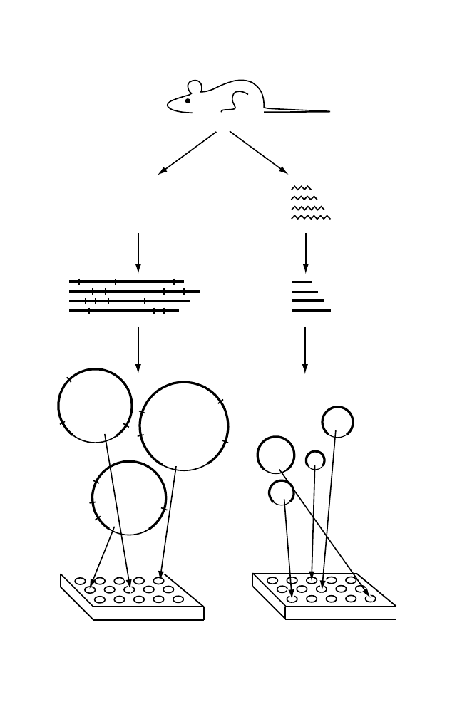

mRNA
Duplex
cDNA
Reverse
transcription
Extract mRNA
from organism, organ,
tissue, or tumor
Clone
cDNA library
Extract genomic DNA
from organism, organ,
or tissue
a. Incompletely digest with
restriction endonuclease
b. Purify one or more size classes
(large, intermediate, or small)
Duplex
genomic
DNA
Clone
Genomic library
(large, intermediate, or small insert)